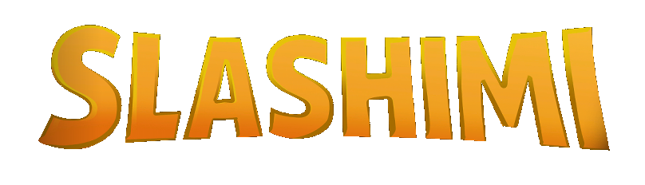
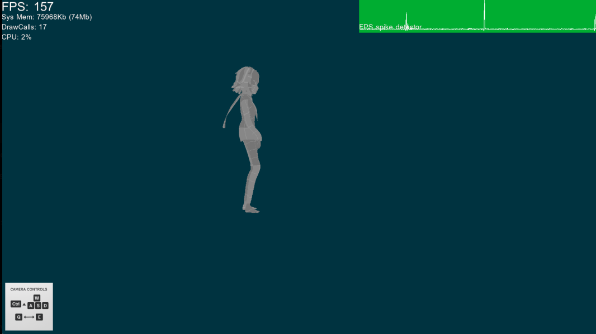
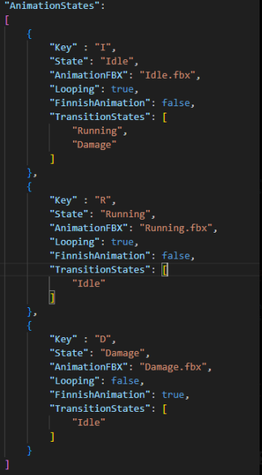
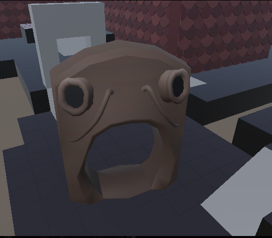
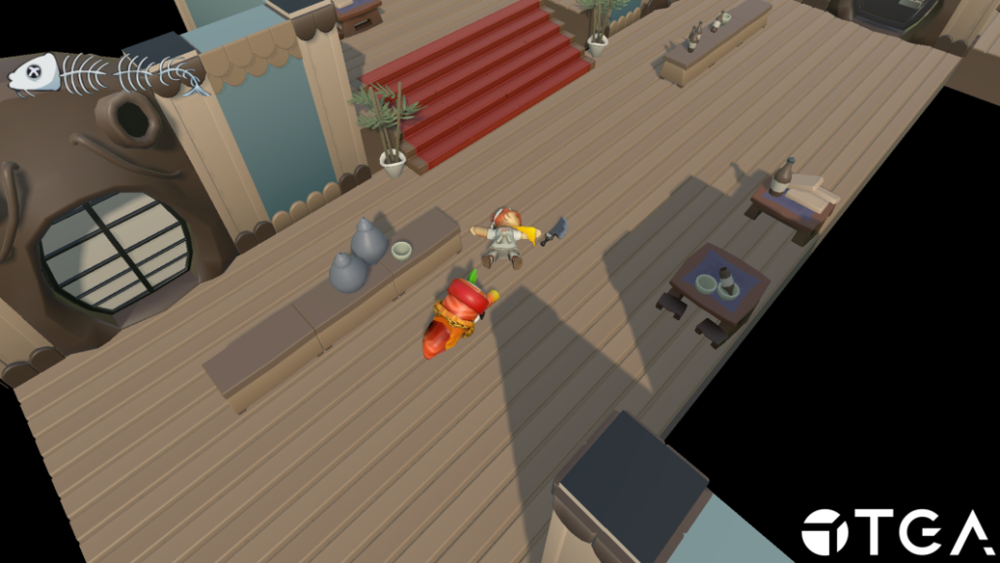

Project 4 – Slashimi
- Reference game
- Death’s Door
- Genre
- Action-adventure
- Duration
- 8 weeks (half time)
- Team size
- 14
- Engine
- TGA Engine (C++, DX11)
Summary
This project was made in TGA’s custom engine. The project specification was to create a 3D game. Since it was new for everyone on the team to work in 3D in the TGA engine, a large focus was placed on building good pipelines.
For this project, I wanted to focus more on pipelines between different disciplines, as well as animations since I hadn’t worked with animations in any previous projects. My work was mainly with the Unity JSON exporter, a small animation state machine viewer, and implementing the animation state machine in the engine.
Contributions
Unity JSON exporter / Import pipeline
To get all necessary data so the level and graphics disciplines could work in Unity without needing to modify JSON files by hand, I took the Unity exporter I worked on in Project 3 and modified it.
Since this project was 3D instead of 2D, the data had to be structured a bit differently.
I didn’t have to modify how transform data was exported, but I wanted the graphics designers to also be able to use materials from Unity. This allowed them to preview how the assets would look in the custom engine.
So my main modification was that when levels were exported, it would create separate JSON files for the materials used by the objects. I also made a small modification to the custom engine so it could load level objects together with the created material JSON.
Animation Pipeline


Through Projects 1, 2, and 3, it always felt like the animators got low priority, so I made a standalone animation pipeline viewer in the TGA engine.
My idea was that even if we hadn’t fully integrated animations into the game yet, they should still be able to work with them and look at transitions between animations.
The animators had to work directly in JSON files for this project because I hadn’t learned ImGui yet, so I couldn’t make a proper user interface for them.
Lighting

Later during the project, the graphics designers wanted lighting because their objects looked flat in the levels.
I gave the team a deadline of one week to get the pipeline from Unity to the engine working.

I always try to work with the other disciplines in mind so they can use the simplest workflow possible. For the lighting implementation, I saved the necessary data for each light type and then used that data to load it in the engine.
Conclusion
This project gave me a better understanding of how important it is to have good pipelines. By working with the Unity exporter, animation system, and lighting, I realized how much impact good pipelines have.
I also learned what needs to change when moving from 2D to 3D, especially when it comes to more complex data like materials and lighting.
The last thing I take with me is how important it is to have an early pipeline for all disciplines, even if it’s not perfect. For example, the animators had a tool to work in, and even if they couldn’t see it directly in the game, they could still work with something similar.